«Dame de beber»
Jesús llega cansado y se sienta junto al pozo. Es Él quien empieza el diálogo, quien pide, quien sale al encuentro. Mi vocación no comenzó conmigo: comenzó con su sed de mí.
«Señor, tú lo sabes todo; tú sabes que te quiero». Jesús le dijo: «Sígueme».Jn 21,17-19
Para sacerdotes, religiosos, religiosas y quienes están en etapas de formación
Recursos para cuidar la vida interior en la formación, el ministerio y la vida consagrada: una app para el examen del día, la Palabra que consuela, lecturas y algunas claves para el camino.
Orientado a favorecer el ser plenamente hombres y mujeres de Dios: totalmente humanos, totalmente de Dios. Un camino hacia una vida en abundancia (Jn 10,10), que abraza la vida «como viene» con mirada de misericordia, haciendo crecer la cultura del encuentro.
Para leer con calma, si querés, con piano instrumental de música católica.
Para quien lo necesite
Todo lo que encontrás acá es totalmente gratuito y de libre uso: no se paga nada, no hace falta registrarse, ni estar en terapia, ni hacerla conmigo. Está orientado a favorecer el ser plenamente hombres y mujeres de Dios: totalmente humanos, totalmente de Dios. Un camino hacia una vida en abundancia, que abraza la vida «como viene» con mirada de misericordia, haciendo crecer la cultura del encuentro. Podés usarlo:
Si en algún momento querés un espacio propio para conversar, también está esa posibilidad. Ver cómo consultar.
Como en Emaús
Dos discípulos vuelven a casa cansados y desilusionados. Alguien se suma al camino, pregunta, escucha y, cuando cae la tarde, se queda. Así entendemos el acompañamiento. Lc 24,13-35
Volver a la fuente
Al mediodía, una mujer va a buscar agua y encuentra a Jesús sentado junto al pozo. Una conversación cambia su vida (Jn 4,5-42). En el centro de toda vocación hay un encuentro así: no una idea, ni un proyecto, ni una norma, sino la persona de Jesús que sale al encuentro, mira, llama. Volver a ese encuentro es volver a la fuente.
Jesús llega cansado y se sienta junto al pozo. Es Él quien empieza el diálogo, quien pide, quien sale al encuentro. Mi vocación no comenzó conmigo: comenzó con su sed de mí.
«Si conocieras el don de Dios…» Él ofrece un agua que se vuelve manantial adentro. Cuando la tarea seca, no se trata de esforzarse más, sino de volver a beber de la fuente.
La mirada de Jesús conoce toda la historia, también lo que cuesta mostrar, y no la usa para condenar sino para liberar. Él no llamó a una persona ideal: me llamó a mí.
La mujer deja allí lo que había ido a buscar y corre a contar lo que vivió. La misión nace del desborde del encuentro, no de la obligación.
Cada vocación tiene su pozo: un lugar, un momento, una persona, una palabra en la que uno se sintió mirado y llamado. Con los años, la rutina, el cansancio o las crisis pueden cubrirlo de polvo.
Volver al primer encuentro no es nostalgia. Es reconocer que la fuente sigue manando, aunque sea de noche, y que el que llamó sigue llamando hoy, en esta etapa de la vida.
Una sugerencia: escribí tu historia de llamado en el cuaderno de la app, o usá la dinámica Mi historia personal para mirarla con ojos de fe.
«Dios tiene sed de que el hombre tenga sed de Él» (Catecismo de la Iglesia Católica, 2560).
Con María
María no es una figura lejana ni un adorno de la fe. Es la primera discípula, la mujer del «sí», la madre que Jesús nos dejó al pie de la cruz. En cada etapa de la vocación, con sus alegrías, sus noches y sus preguntas, camina a nuestro lado y nos señala a su Hijo.
Una joven de Nazaret dice que sí sin tener todas las respuestas. Su «hágase» es la raíz de toda vocación: confiar y dejar que Dios haga.
María no entiende todo de entrada: guarda, medita, espera. Enseña a rezar la propia historia y a dejar que madure.
Parte sin demora a visitar a Isabel. Es madre que acompaña, que sale al encuentro, que sabe de caminos y de cansancios.
En Caná percibe lo que falta antes que nadie y señala a Jesús. No retiene para sí: conduce hacia su Hijo.
Al pie de la cruz, permanece. Jesús nos la entrega como madre, y el discípulo la recibe en su casa. En la hora del dolor, no estamos solos.
En el Tepeyac, a un indígena cansado y preocupado, María le habla con ternura. Esa pregunta sigue sosteniendo a quien se siente poca cosa.
Dentro de cada uno vive el niño o la niña que fuimos: sus alegrías, sus miedos, lo que necesitó y quizás no recibió. En brazos de María, esa parte nuestra puede ser consolada y sanada.
Muchas vocaciones nacieron o se sostuvieron cerca de María: en un santuario, en el rosario de una abuela, en una peregrinación. Volver a ella no es evadirse: es dejarse cuidar por una madre que conoce el camino porque lo recorrió primero, en la fe, sin ver todo claro.
Su estilo es el de la ternura que no se impone, la atención a lo que falta, la presencia que permanece. Un estilo que también puede inspirar nuestro modo de acompañar a otros.
Bajo tu amparo nos acogemos, santa Madre de Dios; no deseches las súplicas que te dirigimos en nuestras necesidades, antes bien, líbranos de todo peligro, oh Virgen gloriosa y bendita.
Una de las oraciones marianas más antiguas (siglo III)
Para el camino
La vocación se vive con todo lo que uno es: la historia, el cuerpo, los afectos, los vínculos, la fe. Algunas dimensiones que vale la pena cuidar, en la formación, a lo largo del ministerio y en la vida consagrada.
Conocerse, integrar la propia historia, crecer en libertad interior. La formación humana es la base sobre la que se apoya todo lo demás.
La demanda pastoral, el cansancio, la soledad, la sensación de no llegar. Lo que se carga en silencio también necesita un lugar.
La amistad, la vida comunitaria, el celibato y la castidad consagrada vividos con madurez, la relación con la familia. Una afectividad integrada sostiene la entrega.
Un traslado, un duelo, un problema de salud, una crisis de sentido o de vocación. Momentos para no atravesar a solas.
Para aliviar el estrés
Cuando las demandas superan los recursos, aparece el estrés. Para volver a sentir «el timón del barco en mis manos», puedo revisar cuatro áreas y ver qué puedo modificar, aunque sea de a poco.
Si alguna se sostiene, hablarlo con alguien de confianza (alguien de tu comunidad o de tu presbiterio, tu acompañante espiritual o un profesional) es un acto de cuidado, no de debilidad.
Cuidar el cuerpo
La vocación se vive con el cuerpo: con él se reza, se acompaña, se celebra, se camina. Muchas veces es lo primero que se posterga y lo último que se escucha. Cuidarlo no es un lujo ni una vanidad: es cuidar el lugar donde Dios nos habita y desde donde servimos.
Cansancio, dolores, insomnio, cambios en el apetito. El cuerpo avisa. Ocuparme sin desesperar ni negar: ni minimizarlo todo, ni alarmarme por todo.
Un médico de cabecera, un control clínico al año, el dentista, los estudios que correspondan según la edad. Acompañamos a muchos enfermos: también nos toca cuidarnos.
Horarios regulares, frutas y verduras, agua, menos ultraprocesados. Y, cuando se puede, la mesa compartida: comer también es encuentro.
Una respiración lenta, que llega hasta el abdomen, calma el cuerpo y la mente. Se puede practicar en cualquier lugar, incluso antes de rezar.
El método de Jacobson: tensar y soltar distintos grupos de músculos para aprender a reconocer la tensión y dejarla ir.
Unos minutos de estiramiento al levantarse o después de muchas horas sentado alivian la espalda, el cuello y los hombros.
Caminar rápido, andar en bici, nadar, correr. Moverse con regularidad mejora el ánimo, el sueño y la salud del corazón.
Un partido con amigos, una caminata por la sierra, bailar, jugar con los chicos de la parroquia. Moverse también es jugar y compartir.
Ante un síntoma hay dos extremos frecuentes: negarlo («no es nada, ya se va a pasar») o vivirlo con angustia («seguro es algo grave»). El camino del medio es escuchar, observar un tiempo y consultar cuando corresponde, sin postergar los controles de salud.
Estas propuestas son orientativas. Ante síntomas nuevos, persistentes o intensos, o antes de empezar una actividad física exigente, conviene una consulta médica.
Para seguir: los carruseles Ansiedad y cuerpo y En paz con tu cuerpo.
Familia de origen
La familia de origen nos dio la vida, el idioma de los afectos, muchas veces la primera experiencia de fe. También, a veces, heridas o mandatos que todavía pesan. La vocación no se vive en el aire: se apoya en esa historia. Mirarla con gratitud y con verdad es parte de una entrega libre.
Mi historia empieza antes de mí: en mis padres, mis abuelos, los lugares y las costumbres de mi casa. Mirarla con verdad ayuda a entender quién soy.
Agradecer lo recibido y reconocer también lo que faltó. Honrar a los padres no es verlos perfectos: es tomar la vida que nos dieron.
Seguir un llamado implica, de algún modo, salir de casa: tomar decisiones propias, poner límites, vivir sin cargar con las expectativas de todos.
Las enfermedades, la vejez de los padres, la distancia del destino, los acuerdos con los hermanos. Cuidar sin culpa y sin dejar de cuidarse.
Lo que no se habló, lo que dolió, lo que se repite de generación en generación. Algunas heridas familiares necesitan tiempo, palabra y ayuda para sanar.
La comunidad, el presbiterio, los amigos, el pueblo de Dios. La vocación no borra la familia de origen: la abre a nuevos vínculos.
No elegimos la familia en la que nacimos, pero sí podemos elegir cómo mirarla hoy. Ponerle palabras, dibujarla, conversarla, rezarla: así lo recibido se vuelve propio, y lo que dolió puede empezar a sanar.
Para trabajarlo: la dinámica Mi genograma ayuda a dibujar la familia generación por generación, y Mi historia personal a mirar el pasado, el presente y el futuro. Si aparecen heridas profundas (violencia, abandono, abusos), conviene hablarlo con un profesional.
«Honra a tu padre y a tu madre» (Ex 20,12): el único mandamiento que viene con una promesa.
Vida consagrada hoy
Consagrar la vida no es retirarse del mundo ni convertirse en alguien distinto. Es entregar lo que uno es (su historia, su cuerpo, sus afectos) para que Dios lo habite y lo vuelva fecundo para otros. En una cultura de lo provisorio, de la prisa y de la autorrealización, sigue siendo una pregunta abierta: ¿se puede apostar todo a un amor para siempre?
La consagración nace de sentirse mirado y amado primero. No es un logro ni un mérito: es una respuesta. Cuando el centro es el amor recibido, la entrega no se vive como renuncia, sino como una forma de amar.
Pobreza: no poseer para poder compartir y confiar. Castidad: amar sin apropiarse, con un corazón disponible para muchos. Obediencia: buscar juntos la voluntad de Dios, más allá de los propios planes.
La vida fraterna, con sus encuentros y sus roces, es un lugar para aprender a amar de verdad. En un mundo fragmentado, muestra que es posible convivir siendo diferentes.
Hoy la vida consagrada es menos numerosa y más frágil. Esa pequeñez puede ser una oportunidad: volver a lo esencial, estar donde otros no llegan, ser signo más que estructura.
Consagrarse no anula a la persona. Una entrega sana se apoya en una humanidad cuidada: el descanso, los vínculos, la salud, la afectividad, la propia historia. Lo que no se integra, tarde o temprano pesa.
«Para siempre» no significa «sin crisis». La fidelidad se vuelve a elegir en cada etapa de la vida, también en los tiempos de noche, de cansancio o de pregunta. Atravesar una crisis no es fracasar: muchas veces es el lugar donde la vocación madura.
Esta pregunta atraviesa la vida religiosa y también el sacerdocio vivido en el celibato.
«Donde hay religiosos hay alegría» (papa Francisco, Carta a los consagrados, 2014).
Valoración personal
La autoestima es la valoración que hacemos de nosotros mismos: cuánto nos aceptamos, nos respetamos y confiamos en lo que podemos. En la vida sacerdotal y consagrada puede quedar atrapada entre dos extremos: medirse sólo por lo que se rinde, o despreciarse en nombre de una falsa humildad. San Pablo propone otro camino: una estima sobria, verdadera, que nace de saberse amado.
«No se estimen más de lo que conviene, sino estímense con sobriedad, según la medida de la fe que Dios dio a cada uno».
«Por la gracia de Dios soy lo que soy, y su gracia no fue estéril en mí».
«Llevamos este tesoro en recipientes de barro, para que se vea que este poder extraordinario viene de Dios».
«Te basta mi gracia, porque mi poder se manifiesta en la debilidad».
La sobriedad de la que habla Pablo corrige la soberbia, pero también el desprecio de uno mismo. Estimarse con sobriedad es mirarse con verdad: reconocer los dones sin apropiárselos, y los límites sin quedar definido por ellos.
Nuestra estima combina lo que hacemos y lo que somos. En el ministerio es fácil apoyarse sólo en lo primero: la agenda llena, los resultados, la aprobación. Pero si sólo me valoro por lo que hago, cada error me derrumba. El valor como persona, hijo o hija amado/a antes de cualquier tarea, es la base que sostiene lo demás.
Compararse es una de las trampas más frecuentes para la estima: con el compañero de curso, con el hermano de comunidad, con el sacerdote que «tiene más llegada», con la religiosa que «hace todo bien». Siempre comparamos nuestra historia completa, con sus luchas por dentro, con la parte que se ve de la del otro. El psicólogo Leon Festinger describió esta tendencia a medirnos con los demás; cuando se vuelve costumbre, alimenta la envidia o el desánimo.
A Pedro le pasó: apenas Jesús le confía su misión, mira a Juan y pregunta «Señor, ¿y qué será de este?». La respuesta es la misma que da nombre a este sitio: «¿Qué te importa? Tú sígueme» (Jn 21,21-22). Cada vocación es única, y la medida justa no es el otro, sino el propio camino: «Que cada uno examine su propia conducta, y así encontrará en sí mismo, y no en los demás, un motivo de satisfacción» (Ga 6,4).
La fragilidad no anula el valor. Pablo no esconde sus debilidades: descubre en ellas el lugar donde la gracia se deja ver. Una humanidad reconciliada con sus límites puede entregarse con más libertad.
«Amarás a tu prójimo como a ti mismo» (Ga 5,14): el amor a uno mismo, bien entendido, es la medida del amor que podemos dar.
Los cinco pilares de la autoestima, ser y hacer, la voz interior y un registro de la semana, a la luz de San Pablo.
Descargar PDF →Ni más ni menos de lo que sos: la autoestima en cuatro pasos, con la Palabra.
Leer el carrusel →La autocompasión: tratarte como tratás a quienes acompañás.
Leer el carrusel →Cuando la mirada ajena pesa demasiado, y preguntas para recuperar libertad.
Leer el carrusel →¿Me quiero? ¿Me escucho? Nueve frases y un termómetro para mirar cómo me trato.
Descargar PDF →Los mensajes amables que quiero recibir de mí cada día.
Descargar PDF →Inspirada en el kintsugi: las grietas reparadas con oro también son parte de mi belleza.
Descargar PDF →«Mi valor no depende de cuánto hago, ni de cómo me siento hoy.»
Ver la tarjeta →Recursos
Materiales breves para acompañar el camino: carruseles para leer en el celular, guías para completar, dinámicas para el trabajo personal, frases para mirar y tarjetas de calma.
PDF para leer con calma y completar en el celular o la compu. Incluyen una parte para comprender y hojas de registro.
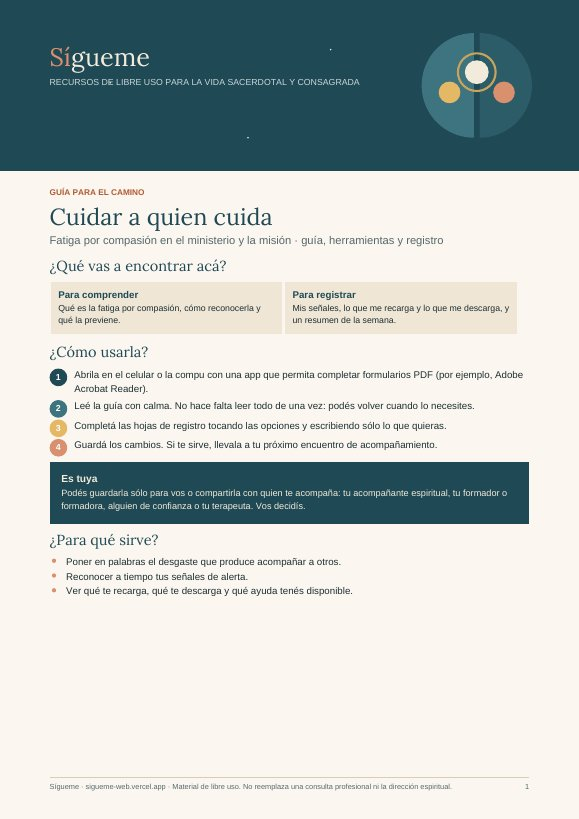
Guía para completar · 6 páginasFatiga por compasión en el ministerio y la misión: señales, la trampa de tener que poder con todo, herramientas y un registro de la semana.
Abrila en el celular o la compu con una app que permita completar formularios PDF, por ejemplo Adobe Acrobat Reader. Tocá las opciones o escribí en los recuadros y guardá los cambios. Es para vos: podés compartirla con quien te acompaña, si querés.
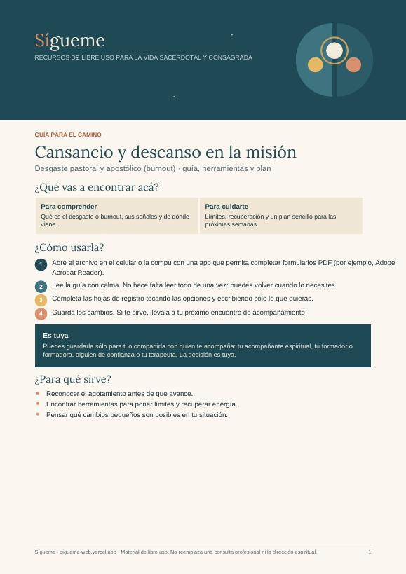
Guía para completar · 5 páginasEl desgaste en la tarea pastoral y apostólica: de dónde viene, límites que sostienen, cómo recuperar energía y un plan sencillo.
Abrila en el celular o la compu con una app que permita completar formularios PDF, por ejemplo Adobe Acrobat Reader. Tocá las opciones o escribí en los recuadros y guardá los cambios. Es para vos: podés compartirla con quien te acompaña, si querés.
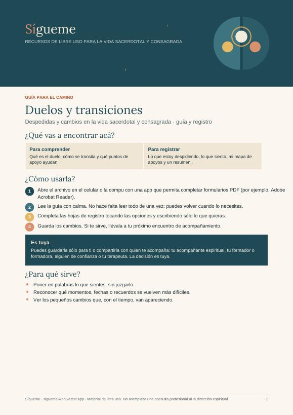
Guía para completar · 5 páginasMuertes, traslados, fin de etapas: cómo se transita un duelo, qué ayuda y un mapa de apoyos.
Abrila en el celular o la compu con una app que permita completar formularios PDF, por ejemplo Adobe Acrobat Reader. Tocá las opciones o escribí en los recuadros y guardá los cambios. Es para vos: podés compartirla con quien te acompaña, si querés.
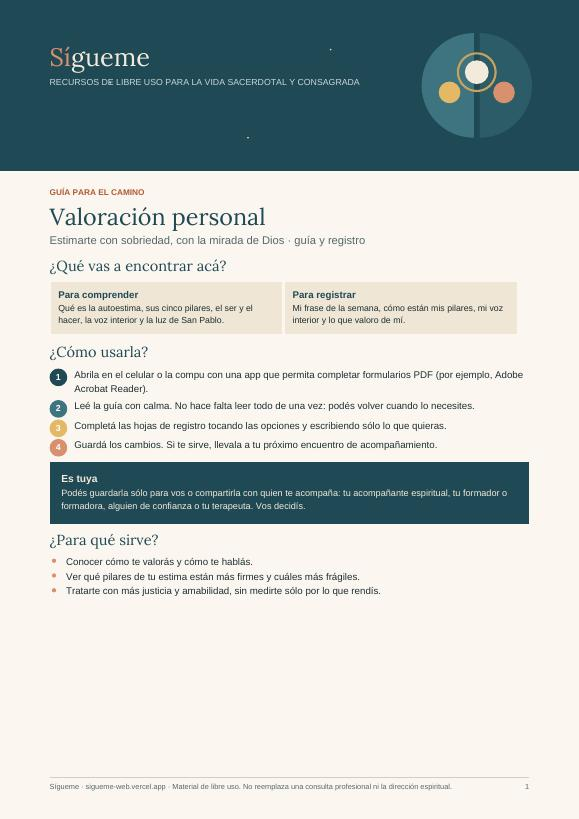
Guía para completar · 5 páginasEstimarte con sobriedad, con la mirada de Dios: los cinco pilares de la autoestima, ser y hacer, la voz interior y la luz de San Pablo.
Abrila en el celular o la compu con una app que permita completar formularios PDF, por ejemplo Adobe Acrobat Reader. Tocá las opciones o escribí en los recuadros y guardá los cambios. Es para vos: podés compartirla con quien te acompaña, si querés.
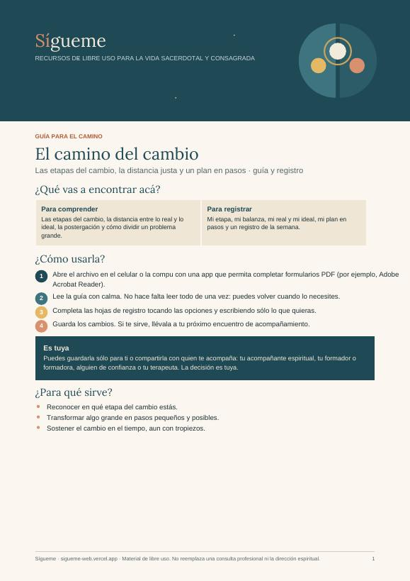
Guía para completar · 5 páginasLas etapas del cambio, la distancia justa entre lo real y lo ideal, la postergación y un plan en pasos pequeños para sostener lo que querés cambiar.
Abrila en el celular o la compu con una app que permita completar formularios PDF, por ejemplo Adobe Acrobat Reader. Tocá las opciones o escribí en los recuadros y guardá los cambios. Es para vos: podés compartirla con quien te acompaña, si querés.
Hojas para imprimir, colorear o completar con calma, en un retiro, en un rato de silencio o en un encuentro de grupo. No hace falta saber dibujar: lo importante es lo que se mueve mientras lo hacés.
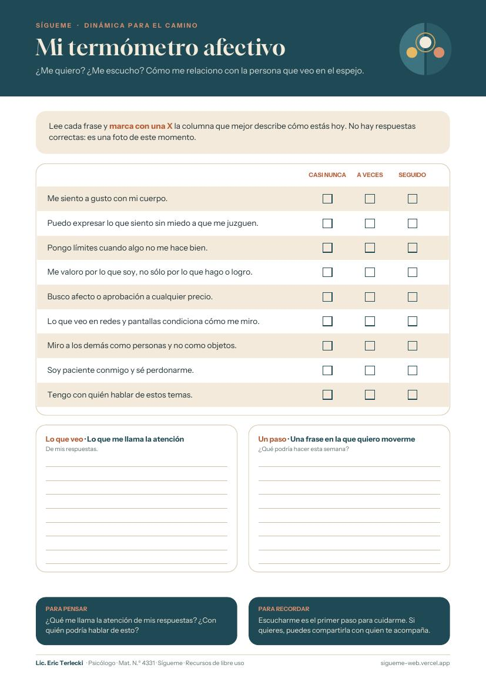
¿Me quiero? ¿Me escucho? Nueve frases y un termómetro para mirar cómo me relaciono con la persona que veo en el espejo.
¿En qué frase me gustaría moverme un casillero?
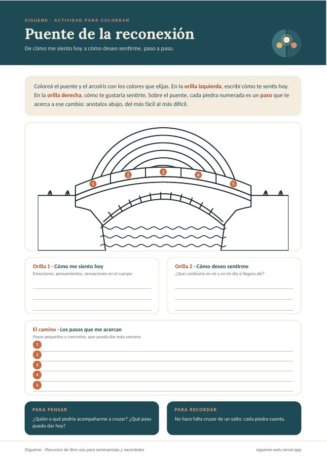
De cómo me siento hoy a cómo deseo sentirme, paso a paso. Un puente de piedra para colorear y cinco piedras para pensar el camino.
No hace falta cruzar de un salto: cada piedra cuenta.
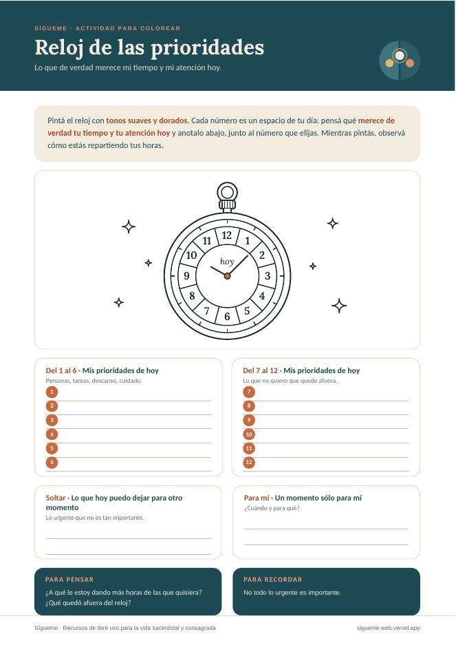
Lo que de verdad merece mi tiempo y mi atención hoy. Un reloj para pintar mientras miro cómo reparto mis horas.
¿Qué quedó afuera del reloj?
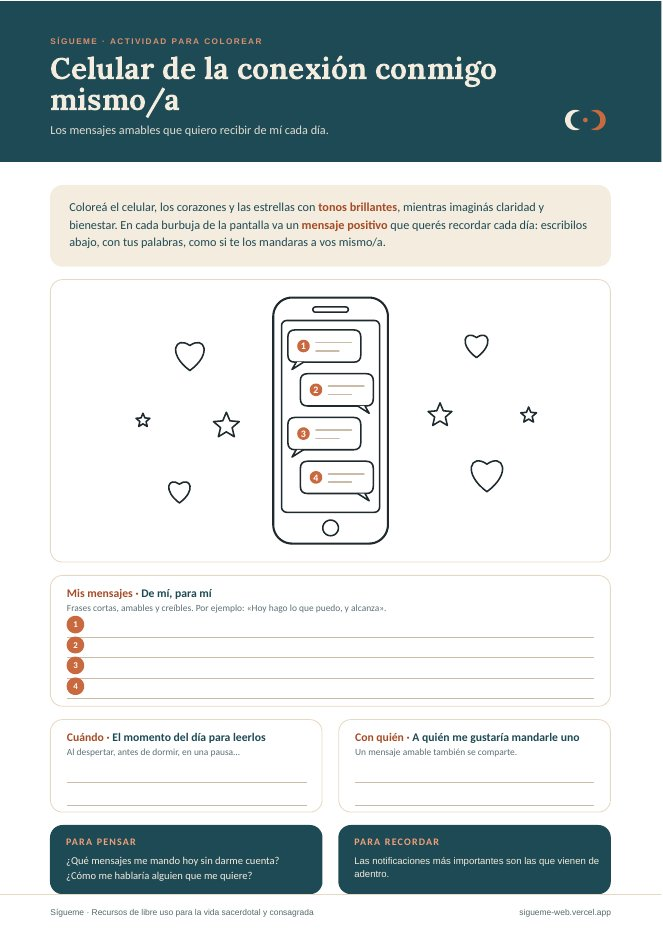
Los mensajes amables que quiero recibir de mí cada día, en la pantalla que más miro.
¿Cómo me hablaría alguien que me quiere?
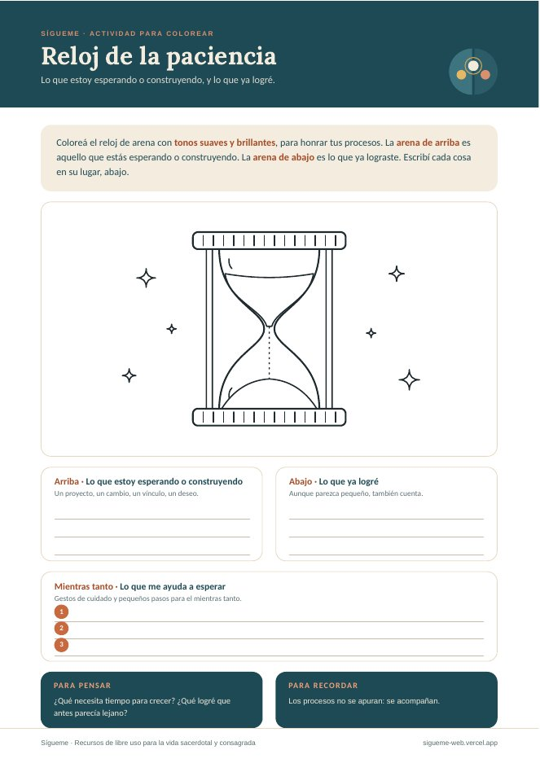
Lo que estoy esperando o construyendo, y lo que ya logré. Un reloj de arena para honrar los procesos.
Los procesos no se apuran: se acompañan.
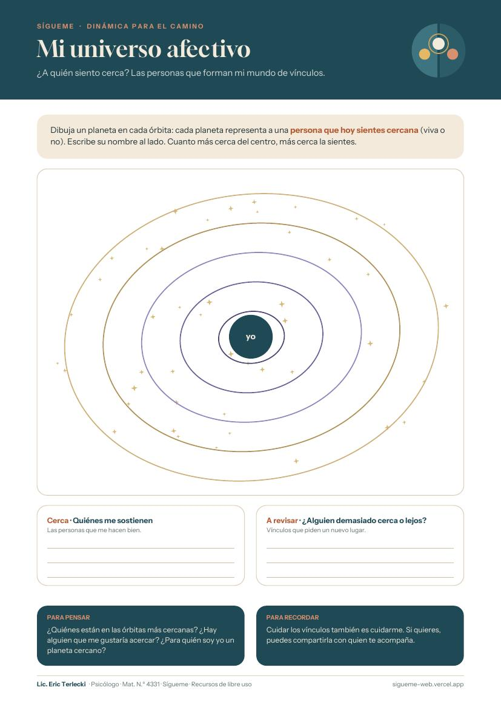
¿A quién siento cerca? Un mapa de órbitas para ubicar a las personas que hoy forman parte de tu vida afectiva.
¿Para quién soy yo un planeta cercano?
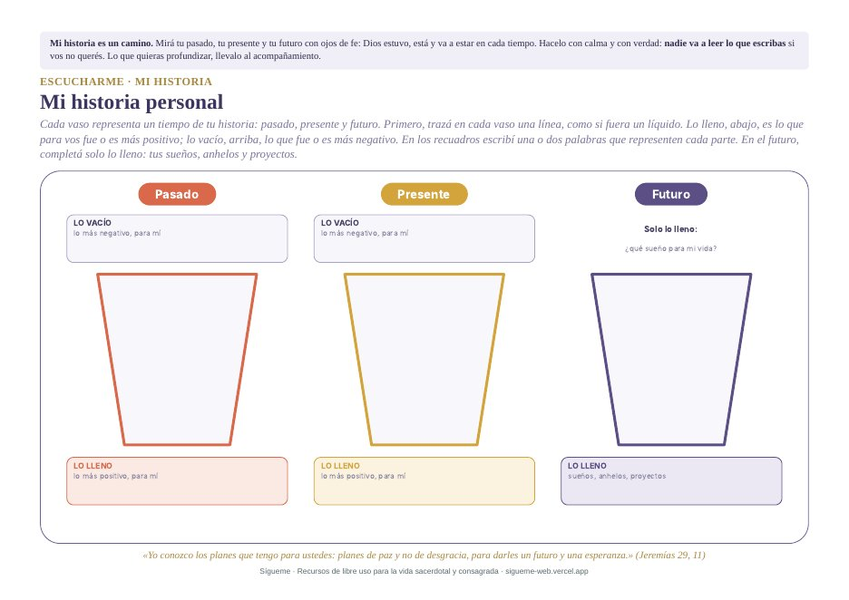
Tres vasos para mirar tu pasado, tu presente y tu futuro: lo que fue más difícil, lo que te llenó, lo que soñás.
Mirá cada tiempo con ojos de fe: Dios estuvo, está y va a estar.
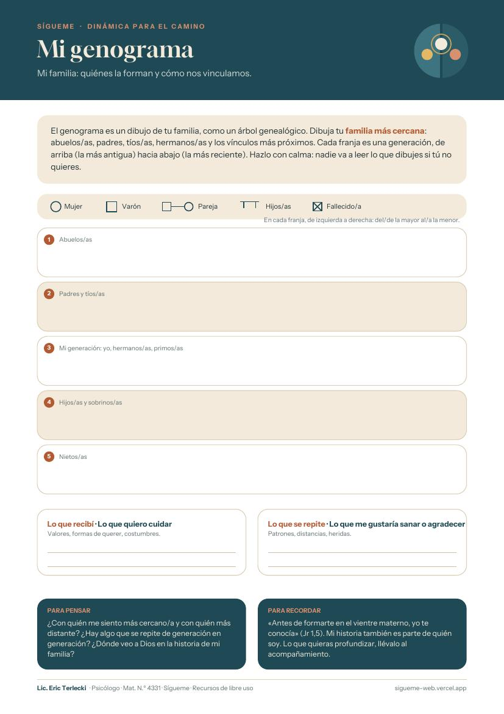
Un dibujo de tu familia, como un árbol genealógico: quiénes la forman y cómo se vinculan, generación por generación.
¿Hay algo que se repite de generación en generación?
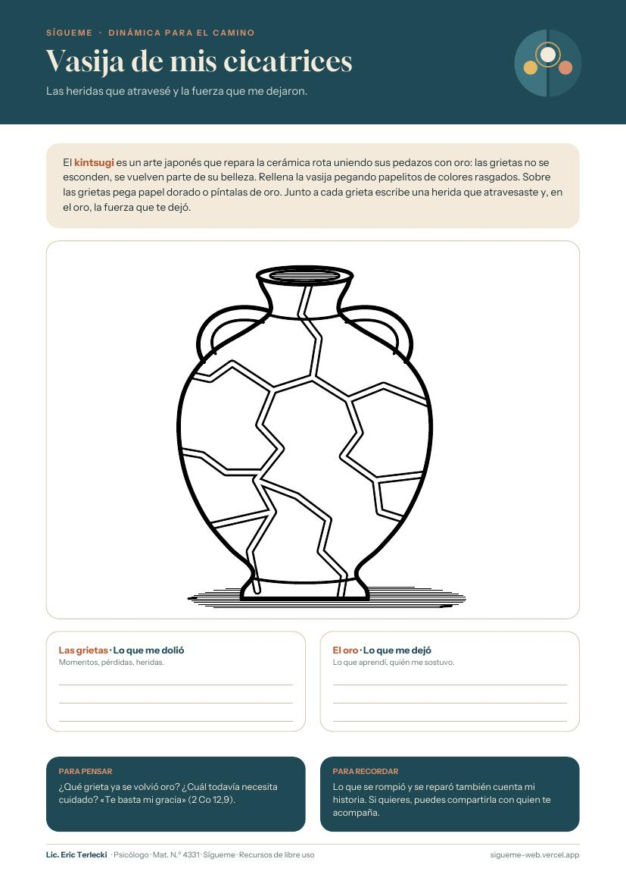
Inspirada en el kintsugi, el arte japonés que repara la cerámica con oro: las grietas no se esconden, se vuelven parte de su belleza.
Lo que se rompió y se reparó también cuenta mi historia.
Tocá una frase para verla en grande. Podés guardarla en el celular o compartirla.
Frases breves para leer despacio cuando la angustia o la ansiedad suben. Podés ponerlas de fondo de pantalla o imprimirlas y llevarlas en el breviario.
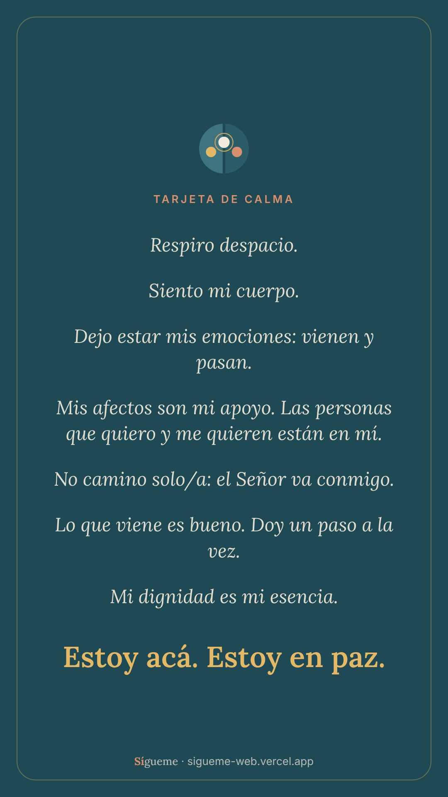
Para volver al cuerpo, dejar pasar las emociones y recordar que no caminás solo/a.
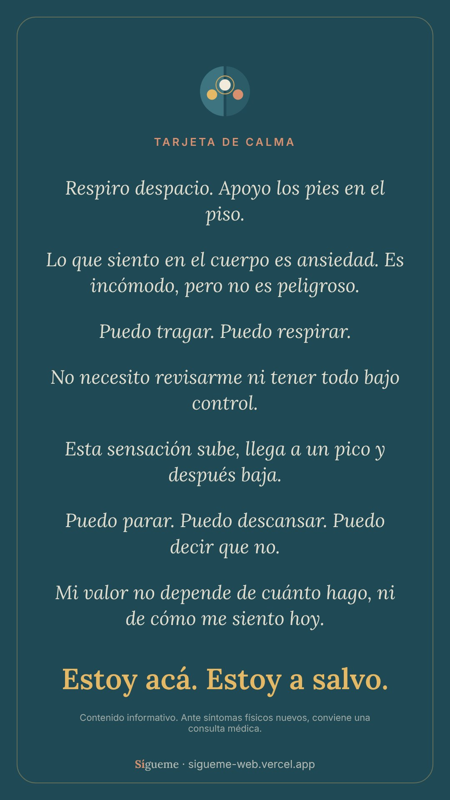
Para cuando la ansiedad se siente en el cuerpo: es incómoda, pero no es peligrosa, y pasa.
Algunos de estos recursos son adaptaciones de materiales de Entre Nosotros. Son contenido informativo: no reemplazan una consulta profesional ni la dirección espiritual.
De libre uso
Una app sencilla para hacer cada noche la revisión de vida al modo de san Ignacio de Loyola y compartir, si querés, lo que se fue moviendo con quien te acompaña. Se instala en el celular como cualquier aplicación.
Lecturas
Algunas lecturas que recomiendo para el camino de la formación, del ministerio y de la vida consagrada: autores que unen la psicología y la vida espiritual con hondura y realismo.
Una mirada psicológica sobre la reconciliación: con uno mismo, con los otros y con Dios. Ayuda a integrar la propia historia y las heridas.
Psicología del encuentro con Dios: cómo la madurez humana y la experiencia de fe se sostienen mutuamente.
Libertad y madurez afectiva en el celibato consagrado. Una obra de referencia para la formación y para releer la propia afectividad.
Itinerario formativo en la vida consagrada: formar el corazón para tener los mismos sentimientos de Cristo, en lo personal y en lo comunitario.
La vida fraterna con sus encuentros y sus roces: una escuela de humanidad y de fe para quienes comparten la vida.
La crisis de los 40 y 50 años como oportunidad de crecimiento personal y espiritual. Muy cercano a la experiencia de muchos sacerdotes y consagrados.
Para espíritus agotados: imágenes y prácticas que ayudan a prevenir el desgaste y a reencontrar las fuentes de energía.
Reflexiones de acompañantes espirituales sobre lo que enferma y lo que sana, con atención especial a sacerdotes y religiosos.
Breve ensayo sobre la meditación, escrito por un sacerdote desde su propia experiencia. Una invitación a la quietud y al encuentro con uno mismo.
Meditaciones ante el cuadro de Rembrandt sobre la misericordia del Padre. Para quien acompaña a otros y también necesita volver a casa.
El ministerio desde la propia herida: quien acompaña no lo hace desde la perfección, sino desde una fragilidad reconocida y ofrecida.
Un reto para hoy y para el futuro. Analiza el desgaste y el burnout en el ministerio y propone caminos realistas e integradores.
Una mirada cargada de amor sobre los curas: la debilidad de lo humano y la fortaleza de la gracia, sin esquivar los temas difíciles.
Un clásico de la psicología humanista: aun en el sufrimiento, la vida puede tener sentido.
Se consiguen en librerías religiosas o en formato digital.
Quién soy
Soy psicólogo y trabajo desde la psicoterapia clínica con un enfoque humanista, integrativo y trascendente.
Quien acompaña a otros también necesita ser acompañado. Detrás de cada vocación hay una persona con su historia, sus afectos, su cansancio y sus preguntas.
«Sígueme» nace como un aporte para quienes sostienen a tantos: un lugar con recursos para el camino, abierto a quien lo necesite.
Es un espacio hermano de Entre Nosotros y de A tu Lado.
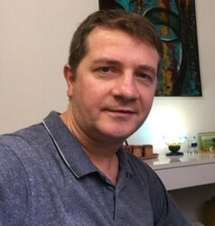
Lic. Eric Terlecki
Licenciado en Psicología · Mat. N.º 4331
Preguntas frecuentes
No. Todo es totalmente gratuito: la app, las guías, los carruseles, las dinámicas y las demás descargas. No hay que pagar ni registrarse, y no hay publicidad.
No. Son de libre uso, para cualquier sacerdote, religioso, religiosa o persona en etapa de formación que quiera aprovecharlos, esté o no en un proceso de acompañamiento.
Sí. La revisión semanal arma un resumen que podés compartir por WhatsApp con quien elijas, o copiar y llevarlo como prefieras.
Sólo en tu celular. La app no envía tus datos a ningún servidor. Nadie más puede verlos, salvo lo que vos decidas compartir.
No. Son espacios distintos que pueden convivir. Lo psicológico y lo espiritual se enriquecen mutuamente.
Sí. Lo que conversamos está protegido por el secreto profesional. No se comparte información con la casa de formación, la diócesis o la congregación sin tu consentimiento expreso.
Empezamos con tres entrevistas iniciales para conocernos y ver juntos qué te serviría. Puede ser presencial en Rosario o virtual, por Meet. No trabajo con obras sociales; los honorarios se conversan por WhatsApp.
Si querés conversar
Además de estos recursos, ofrezco acompañamiento psicológico para sacerdotes, religiosos, religiosas y quienes están en etapas de formación, presencial en Rosario o virtual. Si en algún momento querés consultar, podés escribirme.
Presencial en el consultorio o virtual por Meet. Lunes a viernes de 8 a 21 h y sábados de 8 a 13 h.
Llamá a alguno de estos números o acercate a la guardia más cercana.